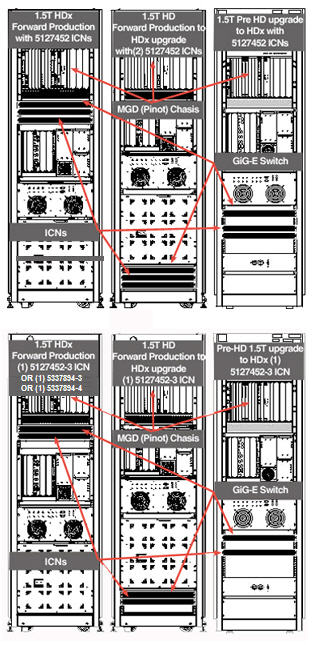
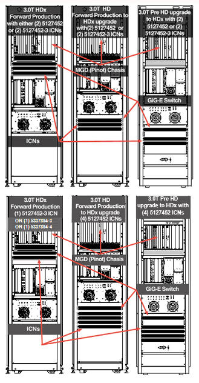
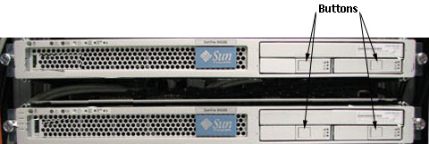
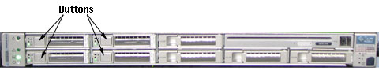

Operating Documentation
Direction 5440000, Rev# 5
Signa HDxt Service Methods
Module Version 3.0, Version Date 6/28/10
Operating Documentation |
| Required Persons | Preliminary Reqs | Procedure | Finalization |
|---|---|---|---|
| 1 | 10 mins | 30 mins | 30 mins |
| Item | Qty | Effectivity | Part# | Manufacturer | |
|---|---|---|---|---|---|
| Image Compute Node (ICN) Hard Drive - Sun 4100 | 1 or as required | use only when cabinet contains Sun 4100 | Refer to FRU Manual | - | |
| Image Compute Node (ICN) Hard Drive - Sun 4170 | As required | use only when cabinet contains Sun 4700 | Refer to FRU Manual | - | |
| ||||
| Electrocution Hazard! | ||||
| Dangerous voltages are present throughout the System Cabinet when Power is applied. | ||||
| Refer To OSHA lockout and tagout requirements. |
| ||||
| Follow the procedure mentioned below for removing power to ICN chassis. Failure to properly power down ICN’s may result in premature ICN failure. | ||||
| ||||
| Under NO circumstances should the ICN's be turned ON/OFF from the power button on the front. The ICN's have software running on disk drives that may become corrupted if not shut down properly. | ||||
Locate the ICN's in the system cabinet. Depending on the configuration of the system, the ICN's can be located either below the MGD Chassis or at the bottom of the cabinet. See Illustrations below.
Illustration 1: ICN Location - 1.5T

Illustration 2: ICN Location - 3.0T

| ||||
| Under NO circumstances should the ICN's be turned ON/OFF from the power button on the front. The ICN's have software running on disk drives that may become corrupted if not shut down properly. | ||||
Switch OFF the ICNs from the Common Service Desktop browser ICN On/Off Procedure.
On the front of the ICN, press the button next to the hard drive that will be removed or replaced. See Illustrations below.
Illustration 3: Button Locations - 4100

Illustration 4: Button Locations - 4170

Once the door pops out, grab it firmly and slide the hard drive out of the ICN.
Insert new hard drive into the slot and secure it in place.
Turn ICNs on per ICN On/Off Procedure.
| NOTE: | For the first 3 or 4 minutes, LED's come on only at the rear of the ICN, next to the power cables. After 3-4 minutes, you will hear the ICN fans come on and then the LED at the front of the ICN starts flashing. |
Configure the new ICN (see ICN Reconfiguration).
Perform a test scan to ensure the system is working properly.